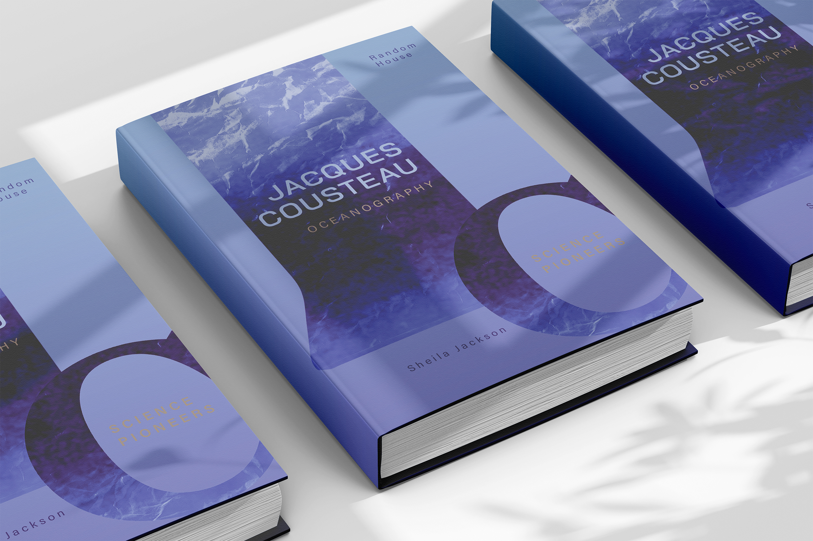
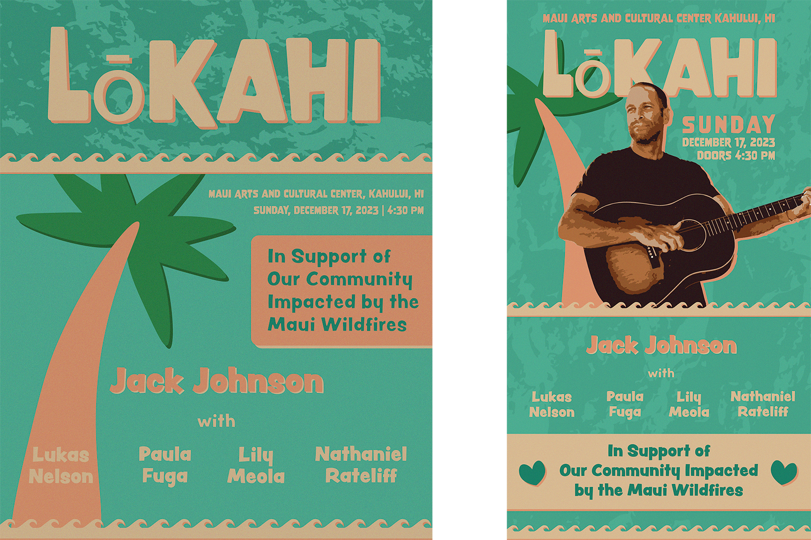

user research, mapping user flow, wireframe development, user testing, brand design, and final prototype development for an app designed to address urbanization's impacts on both human and ecological health
development of logo and brand materials for a new restaurant, with design inspiration taken from both the cuisine served and the restaurant name, and a focus on typography
analogies
a web-based visual archive comparing natural and man-made structures and their associated functions in order to highlight the ways in which human design takes inspiration from nature in order to achieve a common functional goal
typography project focused on the use of letters as image in order to create a textbook cover that illustrates its subject matter, in this case oceanography

urban type
a mini archive exploring urban ecology, consisting of manipulated images and typography scans
autumn
a typographical exploration of words, quotes, and lyrics related to the changing of seasons

jack johnson
a design exercise in following a hypothetical client brief: create an earthy, digitally-lightweight poster and instagram story to promote a benefit concert raising money for wildfire recovery aid in Hawaii
Site by Michael French | Mockup Templates Created by originalmockup on Freepik